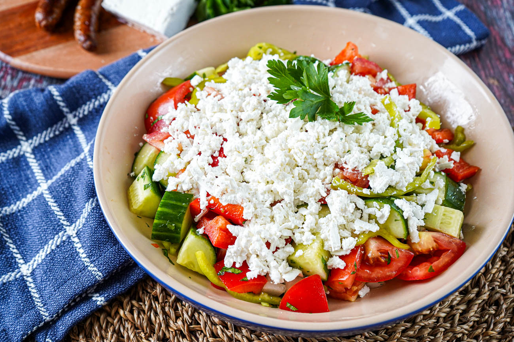
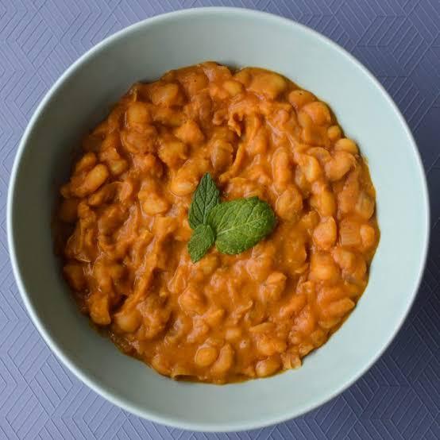
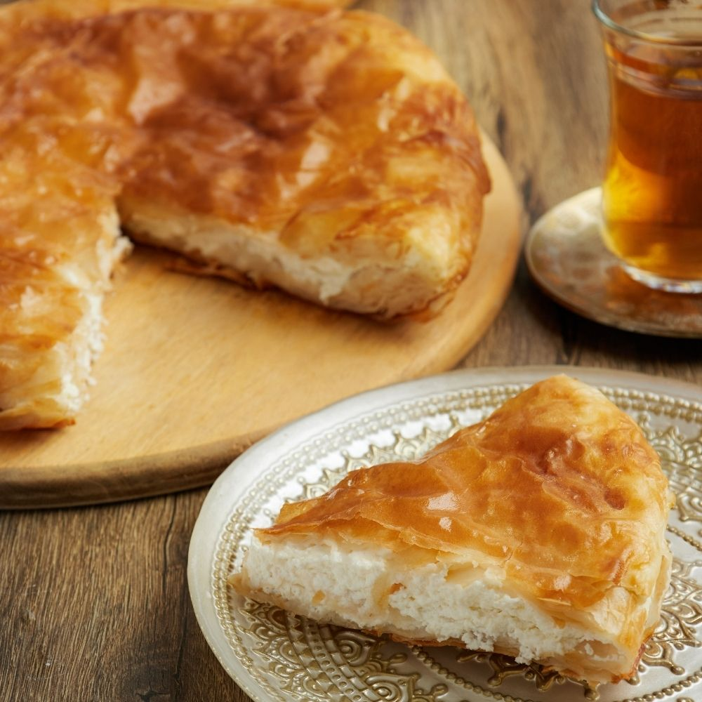

Рецепт за маргарита пица

Маргаритата се прави со едноставно тесто за пица, со домати, моцарела, свеж босилек и малку маслиново масло
- Тесто 50 ден.
- Домати 40 ден.
- Моцарела кашкавал 120 ден.
- Шише маслиново масло од 750ml 400 ден.

Шопската салата се прави со сечени домати, крставици, кромид или печени пиперки и со дебел слој со рендано или здробено сирење
Маргаритата се прави со едноставно тесто за пица, со домати, моцарела, свеж босилек и малку маслиново масло

Тавче гравле е направено од едноставни, хранливи состојки

Бурек се состои од тенки слоеви кршливо фило или јуфка-тесто направено од пченично брашно, вода, сол и масло, завиткани околу солен фил и печени додека не станат крцкави.